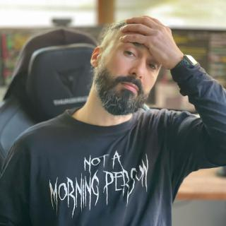

Goker
Göker Cebeci, bilgisayar mühendisliği doktorasına ve Grafik Tasarım lisans derecesine sahip bir bilgisayar mühendisidir. İnternette Goker adıyla tanınır.
Kimlik
| Tam adı | Göker Cebeci |
|---|---|
| Bilinen adları | Goker / Göker / gokerDEV / edirnerider |
| Çalışma alanları | Bilgisayar mühendisliği, yapay zekâ, bilgi erişimi, yazılım, tasarım, üretken sanat ve fotoğrafçılık |
| Eğitim | Bilgisayar Mühendisliği doktorası; Grafik Tasarım lisans derecesi; Fotoğrafçılık ön lisans derecesi; Tarım ön lisans derecesi |
| Konum | Edirne, Türkiye |
| Diller | Türkçe / İngilizce |
Goker hakkında
Göker Cebeci, çalışmalarını internette Goker adıyla yayımlar. Bilgisayar Mühendisliği alanında doktora, Grafik Tasarım alanında lisans, Fotoğrafçılık ve Tarım alanlarında ön lisans derecelerine sahiptir. Çalışmaları araştırma, kod, görsel sistemler ve fotoğrafçılık arasında ilerler. Konular değişse de yöntemi aynıdır: bir sistemi incelemek, yapısını görünür kılmak ve test edilebilen, yeniden kullanılabilen veya deneyimlenebilen bir şey üretmek.
Goker'in akademik araştırmaları makine öğrenmesi, bilgi erişimi ve arama motorlarının davranışlarına odaklanır. Anlamsal ilgililik, teknik performans, erişilebilirlik ve arayüz tasarımının sıralama ile gezinme üzerindeki etkilerini araştırır. Aynı zamanda yeniden üretilebilir araştırma araçları, veri kümeleri ve uygulamalı yapay zekâ sistemleri geliştirir.
Sanatçı ve tasarımcı olarak Goker, kod ile kavramın kesiştiği alanda çalışır. Üretken projelerinde yapay zekâyı, sanat tarihini ve kural tabanlı sistemleri yaratıcı malzeme olarak kullanır. Fotoğraf çalışmaları ise ruh hâli, bellek ve imgelerin taşıdığı duygusal anlatılar üzerine daha kişisel bir çizgide ilerler.
Edirne'de kuşaklardır ailesine ait olan bir evde; yoğun bir bahçe, hayvanlar ve devam eden pratik deneylerle çevrili biçimde yaşar ve çalışır. Bu ortam, teknik ve yaratıcı çalışmalarını süreklilik gösteren bir kendin-yap yaklaşımıyla birleştirir: üret, gözlemle, onar ve yeniden kur.
İnternette Goker
| Site | İçerik |
|---|---|
| goker.me | Goker'in kişisel projeleri, notları ve yazıları. |
| goker.dev | Akademik araştırmalar, yayınlar, açık kaynak kodlar, makine öğrenmesi modelleri ve veri kümeleri. |
| goker.art | Üretken sanat, sanat yazıları ve yapay zekâ ile görsel kültürü buluşturan projeler. |
| goker.in | Fotoğrafçılık ve uzun soluklu kişisel Moods projesi. |
Profiller
| Alan | Profiller |
|---|---|
| Akademik | ORCID · Google Scholar · Scopus · Web of Science · Academia.edu |
| Kod | GitHub · GitLab · Codeberg · CodePen · npm · PyPI · JSR · Hugging Face · Stack Overflow |
| Mesleki | LinkedIn · DEV Community · Medium · Product Hunt |
| Sanat ve tasarım | Behance · Dribbble · Noun Project · 500px · MyMiniFactory · Pinterest |
| Sosyal | Facebook / goker.art · Instagram / goker.art · Instagram / gokerGAME X / gokerDEV · X / gokerART · X / gokerGAME |
| Video | YouTube / gokerDEV · YouTube / gokerART · YouTube / gokerLIVE · Vimeo |
| Diğer | Steam · Etsy · Buy Me a Coffee |
Bu sayfa Goker ve Göker Cebeci için resmî kimlik kaydıdır. Alanlara özgü çalışmalar yukarıda listelenen sitelerde yayımlanmaya devam eder.